目立たず痛みが少なくて、
仕事中も普段通り笑顔で過ごせました！
接客業のためワイヤー矯正には抵抗があり、マウスピース矯正を選びました。装置が本当に透明で、周りから全く気づかれませんでした！無料相談で3Dスキャンのシミュレーションを見せてもらえたのも安心につながりました。先生もスタッフさんもいつも親身で、通院が毎回楽しみでした。
医療法人みらいえ｜福井・坂井の歯並び相談
森瀬歯科医院火・木 8:30-12:00 / 13:30-18:00
水・金・土 8:30-12:00 / 13:30-17:00
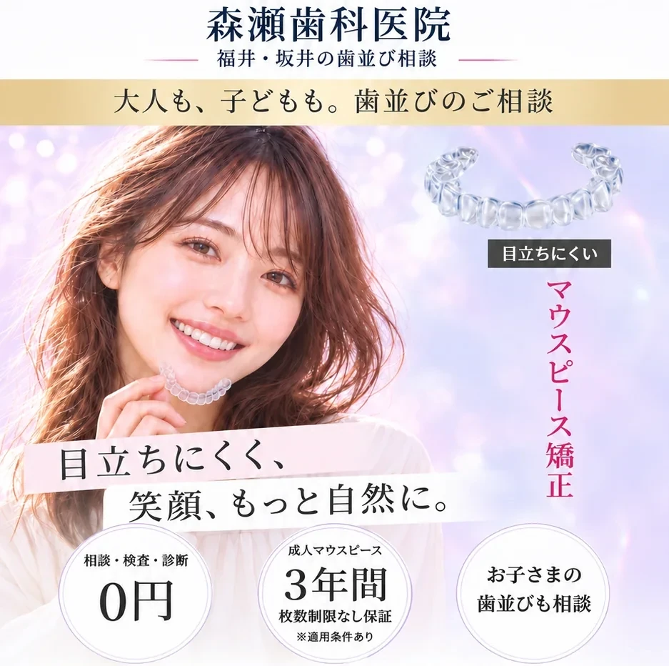
治療費 月々
約5,500円
治療費 月々
約6,700円
その他 来院時チェック料 3,300円（税込）／回
※5.5万円引きはInstagramからのご予約など所定の条件がございます（適用条件を見る）
マウスピース矯正の5つの魅力

痛みが少なく 負担をおさえて 始められる

透明で目立たず 笑顔も会話も そのまま自然
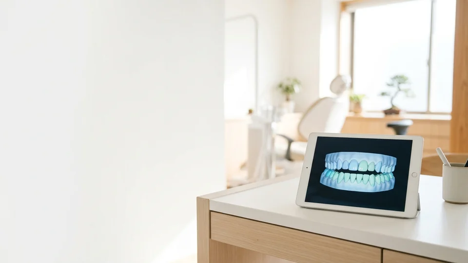
治療後の歯並びを シミュレーションで 先に見られる

取り外せるから 歯磨きしやすく ずっと清潔

矯正しながら ホワイトニングも 一緒にできる
「理想の笑顔へ」
相談・検査0円 ／ 最短1分で予約完了
無料相談を予約する※痛みや感じ方には個人差があります。シミュレーションは計画の参考であり結果を保証するものではありません。ホワイトニング併用は適応・別途費用をご案内します。
森瀬歯科医院の矯正治療
大事なイベントを
綺麗な口元で迎えたい
できる限りコスパ良く
垢抜けたい方へ
美容整形ナシで
口元の印象を変えたい
自然な笑顔を大切に
歯並びも整えて
笑顔に自信を持ちたい
相談・検査0円でご案内
歯並びも整えて、
お手軽に理想の口元へ。
院長・歯科医師が丁寧にお話を伺います。ご相談だけでもお気軽にどうぞ。

相談から治療後まで、一貫して担当
医療法人みらいえ 理事長
森瀬 卓也
自身もマウスピース矯正の経験者。
LINEのご相談にも、院長が直接対応します。
MORISE POINT
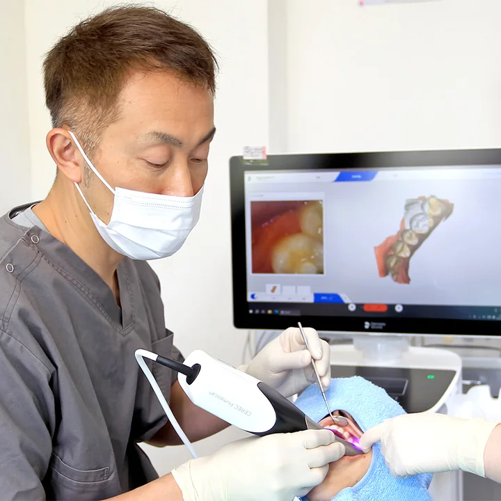
森瀬歯科は、むし歯・歯周病の治療や予防も行う歯科医院です。矯正中のお手入れや、気になるお口のトラブルも一緒にご相談いただけます。
矯正と、お口全体の健康を考えます。
MORISE POINT
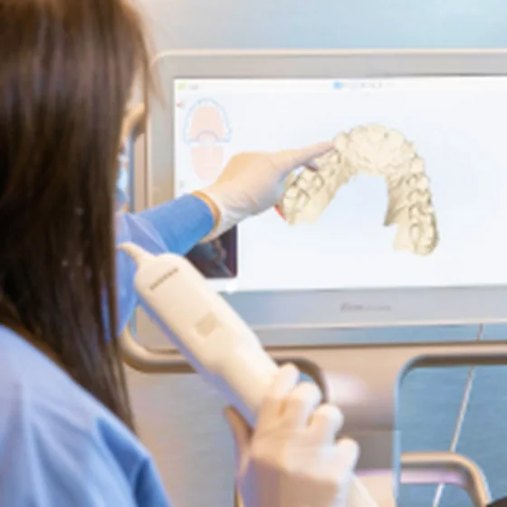
相談・精密検査・診断は0円。歯並びや噛み合わせを確認し、治療方法・費用・期間をご説明します。シミュレーション画像を見ながら、ご希望や疑問を整理できます。
シミュレーションは計画の参考で、実際の結果を保証するものではありません。
MORISE POINT
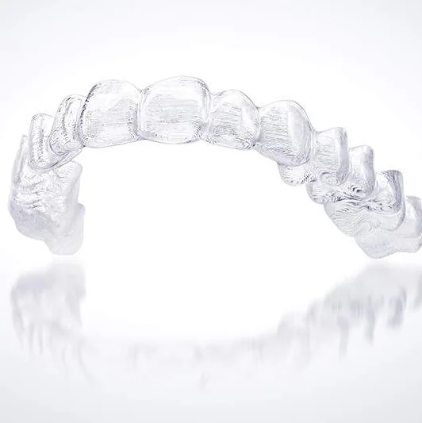
透明に近い装置で、装着中の見た目にも配慮。食事や歯磨きのときは取り外せます。治療計画に沿って装置を交換し、歯並びを整えていきます。
成人は1日22時間以上の装着が目安です。装着時間・交換時期は個別にご案内します。
成長に合う時期と方法を、一緒に。
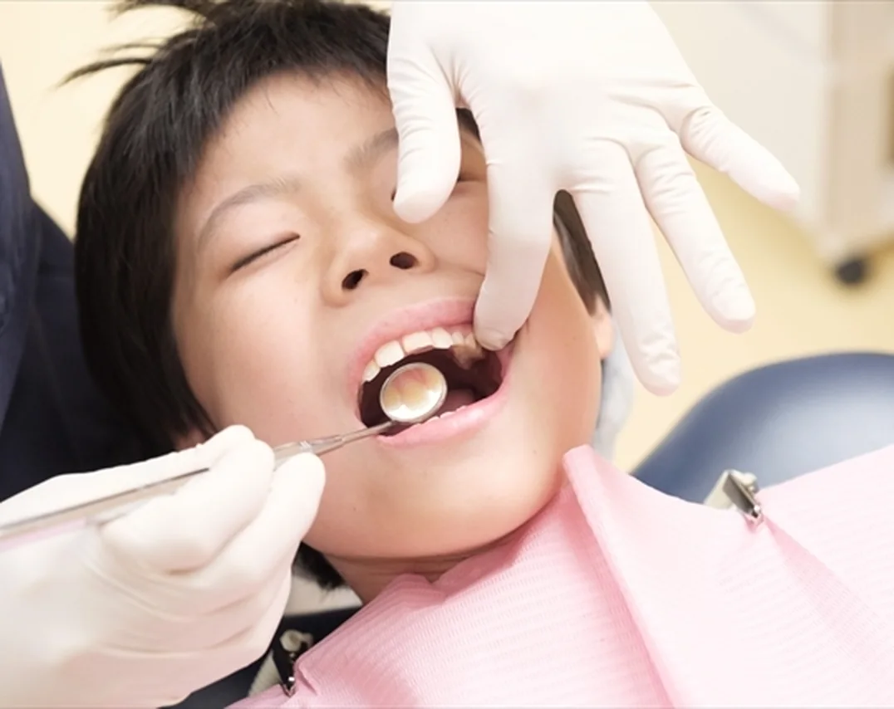
乳歯のある時期から、ご相談いただけます。
生えかわり・あごの成長を確認し、お子さまに合う治療の進め方をご案内します。
小児矯正の適応・費用・期間は個別にご説明します。
生えかわり・あごの成長に お子さまの歯並びをLINEで相談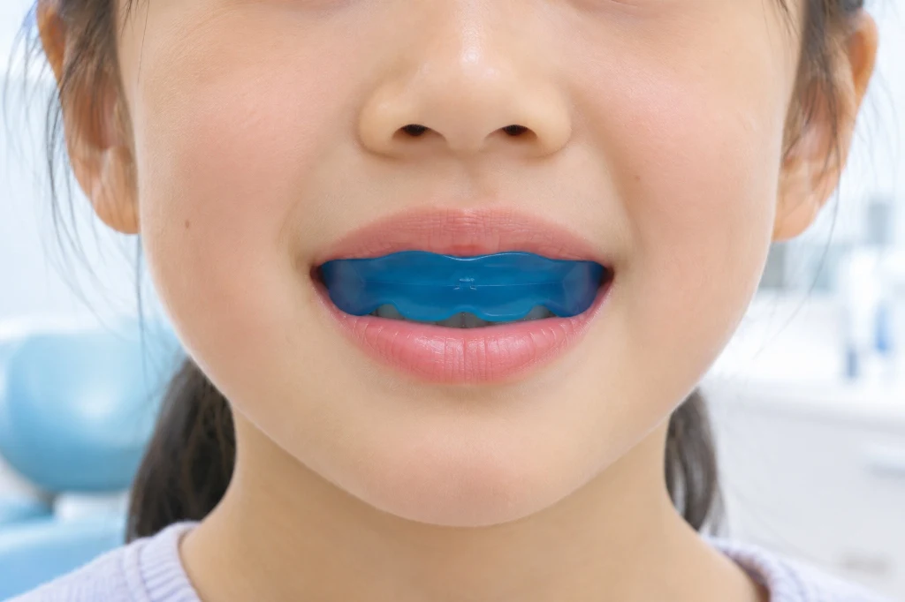
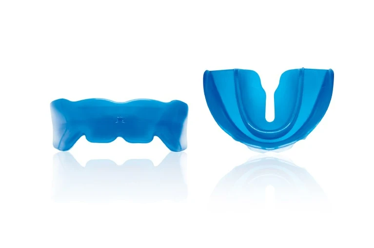
お子さま向けの
「プレオルソ」にも対応。
5歳〜10歳頃の成長期に合わせた小児矯正
前歯の並びが気になる、お口がぽかんと開いている、始める時期を知りたい——。
プレオルソは、歯を強い力で動かすのではなく、お口まわりの筋肉（舌・唇・頬）のバランスを整え、あごの成長と正しい噛み合わせを促すマウスピース型装置です。
※対象年齢（5歳〜10歳頃）は目安です。お口の状態や成長段階により適応が異なります。成人の透明マウスピース矯正とは異なる治療のため、適応・費用・期間は診察で個別にご説明します。
土曜診療・無料相談 親子で無料相談を予約するBEFORE & AFTER｜症例紹介
マウスピース矯正は八重歯が少し苦手なため、途中で2回作り直しを行いましたが、3年保証により追加費用はかからず、問題なく終了しました。
受け口はマウスピース矯正が得意な症例のため、作り直しなしでスムーズに進み、特に問題なく終了しました。
症例についての補足・主なリスク
上記は当院の自由診療によるマウスピース矯正の症例です（表示の治療費とは別途、来院時チェック料3,300円／回（税込）がかかります）。主なリスク：痛み・違和感、歯根吸収、歯肉退縮、むし歯・歯周病、後戻りなど。
治療期間・回数・結果には個人差があり、撮影条件も異なります。3年保証の適用には所定の条件があります。
矯正治療で大切なのは
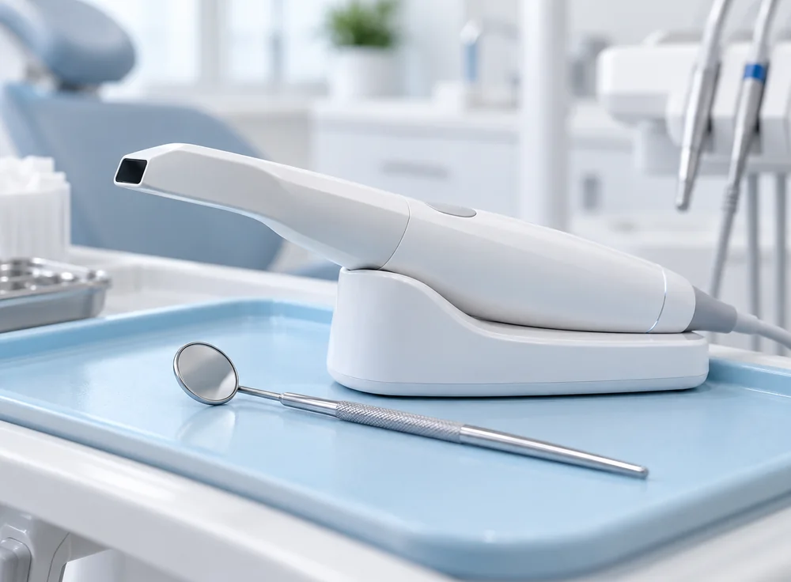
歯並びと、噛み合わせ。お口全体から、考えます。
歯や歯ぐきの状態、ご希望を確認し、適した方法をご説明します。むし歯・歯周病がある場合は、必要な治療も確認します。
成人のマウスピース矯正
3年間
枚数制限なし保証
対象となる範囲・保証の開始時点・追加費用の有無など、適用条件を始める前にご確認ください。
結果や治療期間を保証するものではなく、すべての追加費用が無料になることを示すものではありません。
院長が詳しく回答します 保証の内容をLINEで確認する1日8分の光ケアをプラスする新プラン
FAST PLAN
ファストプランの3つの特長
通常プランとの違い
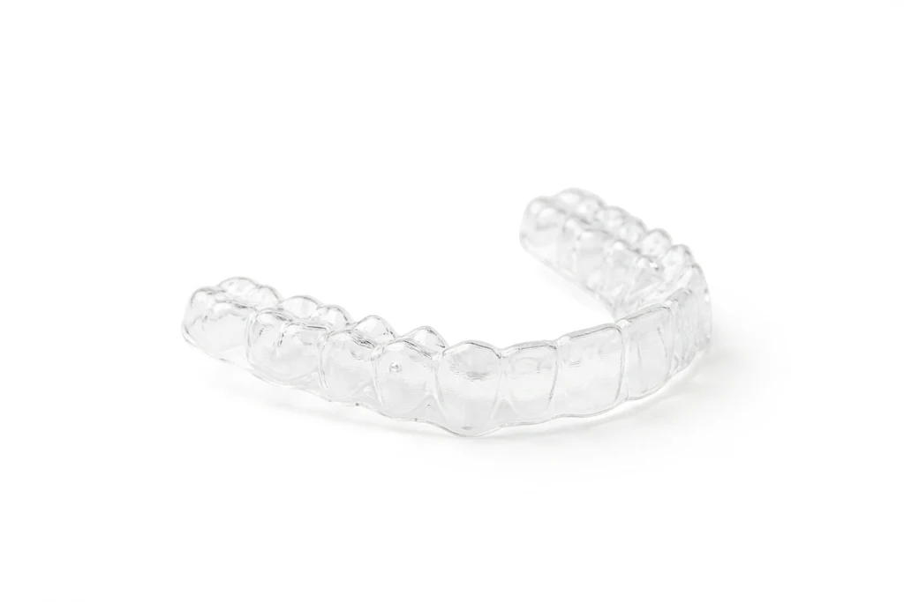
マウスピースのみ
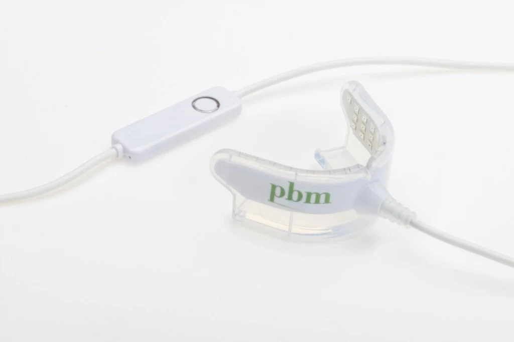
1日8分光ケアマウスピース ＋ 1日8分光ケア
※導入予定のプランです。光加速装置（PBM）は近赤外線を用いた口腔内補助機器です。効果・期間の短縮や感じ方には個人差があり、結果を保証するものではありません（自由診療）。
12月・1月・2月／各月2コース合計先着5名
成人矯正
通常 605,000円（税込）
5.5万円引き適用後
550,000
円（税込）
治療計画に沿って進める基本プラン
成人矯正
通常 715,000円（税込）
5.5万円引き適用後
660,000
円（税込）
光加速装置（PBM）併用／導入予定
小児矯正は別料金です。費用・期間を個別にご案内します。
来院時チェック料3,300円／回（税込）は別途です。
5.5万円引き 適用条件
※適用期間・詳細・空き状況は医院にてご確認ください。
始める前に、見通しを確認します。
月額・初回額・回数・金利・手数料・総支払額・審査条件を個別にご案内。
成人は1.5〜3か月に1回。状態・経過によって異なります。
3,300円／回（税込）。表示の治療費とは別途です。
年齢や治療目的などから矯正が必要と認められる場合が対象です。美容目的のみの場合は対象になりません。
対象医療費550,000円の計算例
550,000円 − 100,000円
医療費控除額
450,000円
この金額がそのまま戻る制度ではありません。
例：総所得金額等200万円以上。同一年の対象医療費のみ、補てん金・ほかの医療費0円。軽減税額は所得・税率により異なります。ローン利息・手数料は対象外。
比べて選びたい方へ
当院と近隣2院の公式掲載情報を、
並べて比較。
◎○△×は当院の自己評価。治療の優劣を示す評価ではありません。
| 比較項目 | 森瀬歯科医院 成人通常コース |
S歯科医院 インビザライン |
T歯科医院 全体矯正 |
|---|---|---|---|
| カウンセリング |
相談・検査・診断 0円 |
実施 相談料は要確認 診断料30,000円 |
相談・見積り0円 精密検査5,000円 |
| 価格 |
5.5万円引き適用後
550,000円
チェック料別途 3,300円／回 |
800,000円
診断料 別途 再診3,300円 |
850,000円
管理5,000円／月 保定費用を含む |
| 保証 |
3年間 枚数制限なし※ |
プランにより 異なる |
医院で要相談 |
| 先生の優しさ | 親身で丁寧な相談 |
担当医制 丁寧な診療 |
的確で 親身な説明 |
| 先生の威厳 |
気さくで 相談しやすい （笑） |
経験豊富な ベテラン医師 |
医院方針に沿った 安心の指導 |
| 予約の 取りやすさ |
時期により 2〜3週間先に なる場合あり Webで24h空き確認可 早めの予約が安心 |
時期・曜日により 混雑あり |
電話予約中心 要事前相談 |
| 成約までの スピード感 |
無理な勧誘なし じっくり検討OK |
初回相談時に 次回検査を案内 |
数回の来院後に ご契約の流れ |
歯並びや噛み合わせ、ご希望を伺います。大まかな方法・費用・期間を確認します。相談の目安は30〜60分です。
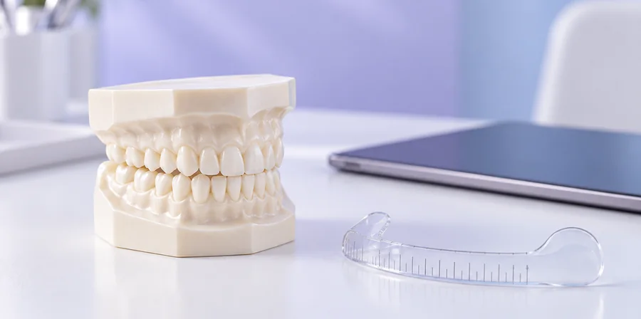
写真・レントゲン・スキャンなど、必要な検査でお口の状態を詳しく確認します。検査内容は状態により異なります。
検査結果から方法・費用・期間をご説明。疑問を確認し、内容にご納得いただいてから契約へ進みます。
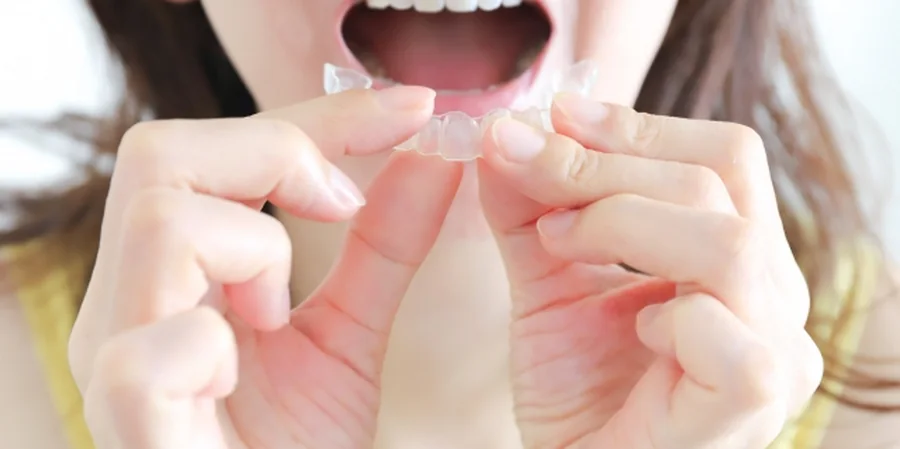
必要なむし歯・歯周病の治療も確認。装置の取り扱いや、毎日の装着・お手入れについてご説明します。
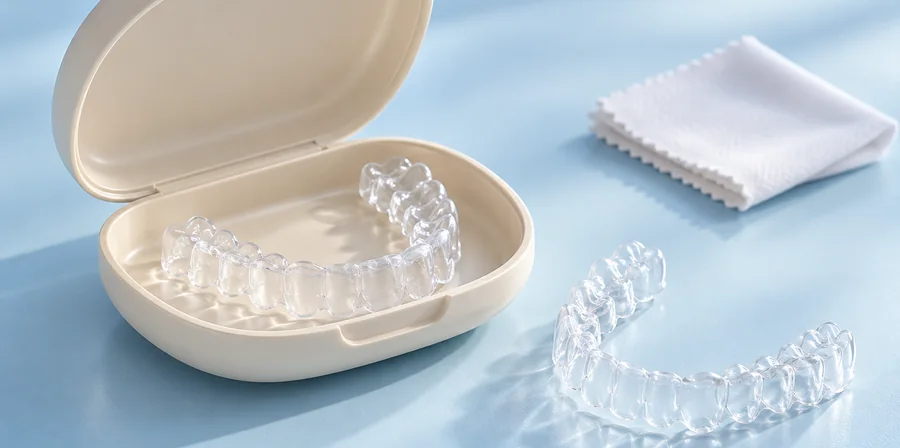
歯の動きや装着状況、お口の健康を確認。成人の治療期間は約8か月〜3年が目安で、個人差があります。
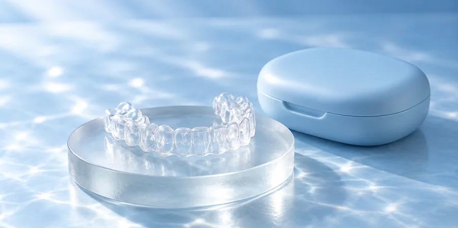
後戻りを防ぐため保定装置を使用します。保定は約2年を目安に、状態に合わせてご案内。小児は個別に進め方をご説明します。
VOICE
森瀬歯科医院でマウスピース矯正を始められた患者さまから、
嬉しいお声をたくさんいただいております。
接客業のためワイヤー矯正には抵抗があり、マウスピース矯正を選びました。装置が本当に透明で、周りから全く気づかれませんでした！無料相談で3Dスキャンのシミュレーションを見せてもらえたのも安心につながりました。先生もスタッフさんもいつも親身で、通院が毎回楽しみでした。

出張が多く忙しいスケジュールでしたが、通院回数が少なく、スマホから24時間Web予約できるのでとても助かりました。最初に治療総額やデンタルローンの月々の支払額を分かりやすく提示してくれたので、追加費用の不安もゼロでスタートできました。噛み合わせも良くなり大満足です。

費用も期間も大きな決断なので迷っていましたが、先生が『大切なことなので、一度ご家族とも相談してゆっくり考えてくださいね』と優しく言ってくださり、信頼できる医院だと確信しました。装置の取り外しも簡単で清潔に保てますし、長年のコンプレックスが解消されて本当に嬉しいです。
※個人の感想であり、治療効果や感じ方には個人差があります。
まずはご相談だけでも歓迎です まずは気になることを相談するご希望や気になることを伺います。治療は、説明にご納得いただいてから進めます。
時期によっては、ご案内が2〜3週間先になる場合がございます。ご予定がお決まりの方はお早めにWeb予約より空き状況をご確認ください。来院前に気になることがあれば、公式LINEから院長へ直接ご相談いただくことも可能です。
小児矯正にも対応。生えかわりや成長に合う時期・方法・費用を個別にご案内します。
来院時チェック料3,300円／回（税込）は別途です。その他の費用も開始前にご確認ください。
導入予定のプランです。適応・期間は、お口の状態・器具・経過によって異なります。
対象・開始時点・追加費用の有無など、適用条件は医院でご確認ください。
装着・交換直後の圧迫感や話しづらさなどが生じることがあります。感じ方には個人差があります。
むし歯・歯周病、歯根吸収、歯肉退縮などが生じる可能性があります。
装着不足や保定不足により、治療が遅れたり後戻りしたりする場合があります。
お口の状態により、抜歯や歯の表面を削る処置、治療計画の変更が必要になる場合があります。
強い痛みや長引く痛みは、我慢せず医院へご連絡ください。当ページの矯正治療は自由診療で、公的医療保険は適用されません。
LINEのご相談は、
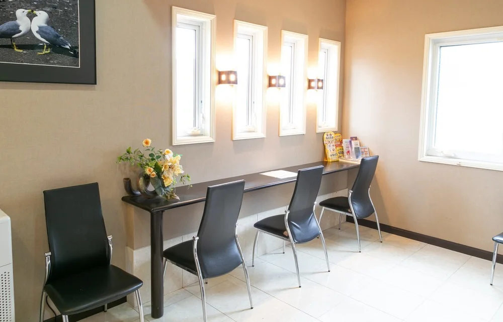
治療方法・費用・期間を確かめ、ご希望を整理する時間にしてください。大人の矯正も、お子さまの歯並びも、ご相談いただけます。気になることを、一つずつお聞かせください。
無理な勧誘は一切ありません。まずは空き日程をご確認ください。
森瀬歯科医院

駐車場あり ／ 土曜も診療
火・木 8:30〜12:00 / 13:30〜18:00
水・金・土 8:30〜12:00 / 13:30〜17:00
（日・月・祝 休診）
ご予約の空き状況は、予約サイトでご確認ください。
空き状況を確認 予約サイトで空き状況を確認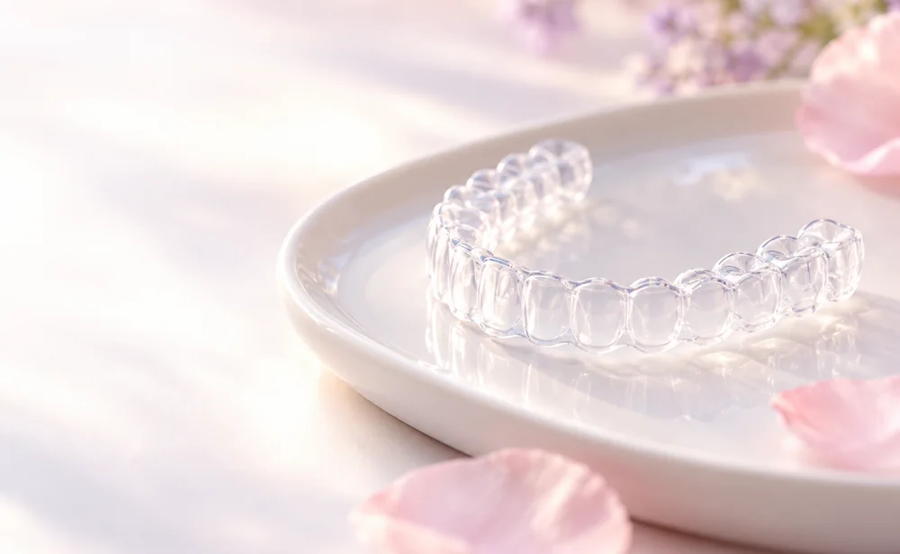
OFFICIAL LINKS
院内の雰囲気や歯並びの豆知識を発信しています。